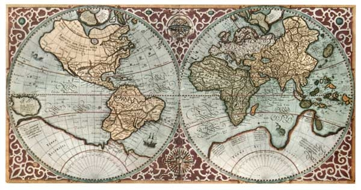

Gis 4 Schools¶
Proiezione della mappa di Mercatore¶
Dall’inizio del 1500 con la scoperta dell’America, i disegni dei cartografi precedenti a quella data risultarono sbagliati a causa della sfericità della Terra. Si cercarono di creare mappe che rappresentassero dei punti che corrispondono ai punti reali del pianeta.
Una persona in particolare che ha dedicato molti anni della sua vita a disegnare mappe è Gerhard Kremer, detto Mercatore. Per circa 30 anni ha cercato il miglior modo di raffigurare la superficie terrestre su un piano. Basandosi sulla Proiezione Cilindrica Centrale che ha poi migliorato in seguito ai suoi calcoli, finì di completare la proiezione che prese il suo nome “PROIEZIONE DI MERCATORE”.
Iniziò il suo percorso nel 1569 quando pubblicò un planisfero composto da 18 fogli, con un piccolo accorgimento: allungare la dimensione dei poli per non deformare il rapporto tra est-ovest e nord-sud. Questa tipologia di carta mantiene gli angoli costanti rispetto alla realtà, ma distorce tanto più quanto ci si avvicina ai poli, rendendola inutilizzabile sopra i 70° Nord/Sud.
Essa è diventata la proiezione cartografica più usata per le carte nautiche per la sua proprietà di rappresentare linee di costante angolo di rotta con segmenti rettilinei.